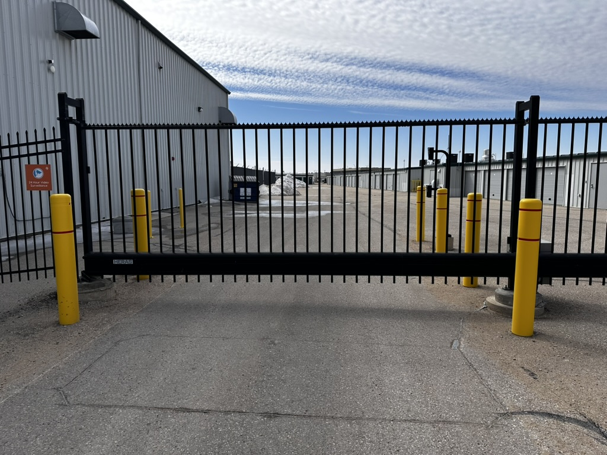
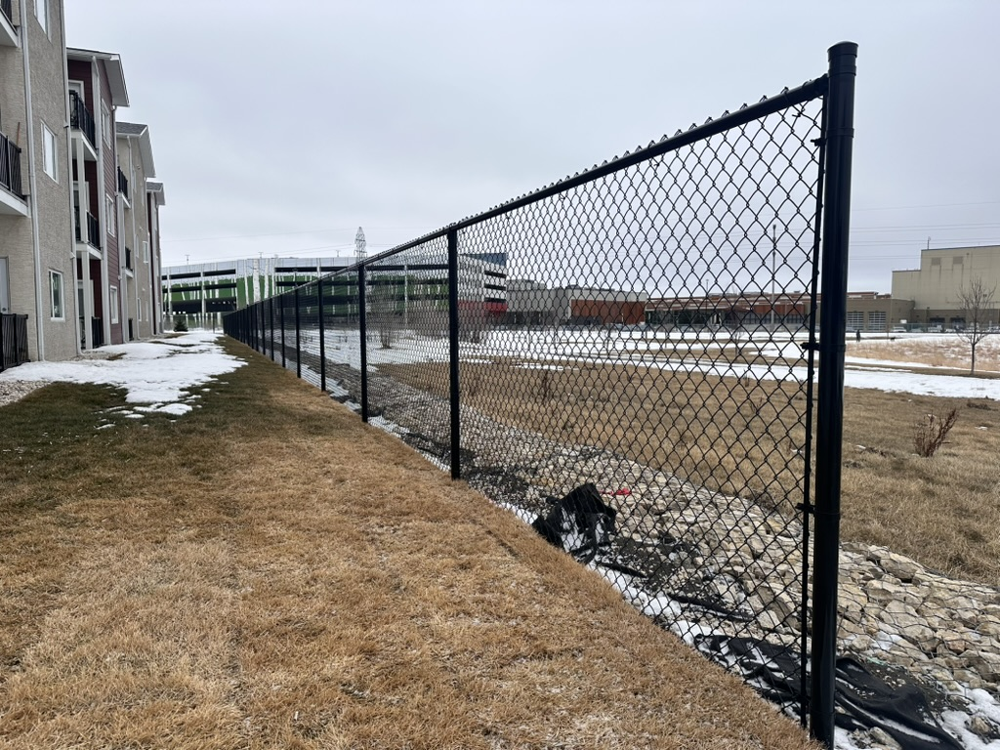
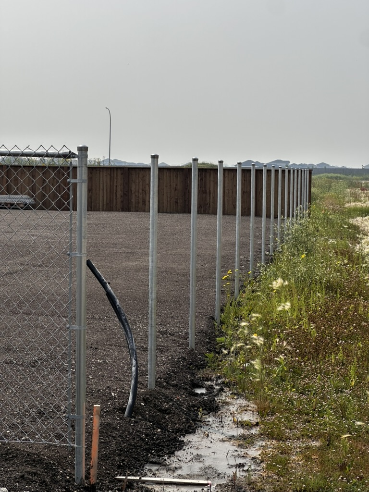

Complete perimeter security and access control for commercial parking facilities in Winnipeg. Fencing, gates, barrier arms and integrated technology in one solution.
Parking Perimeter Fencing
An unsecured parking lot is an open invitation for theft, vandalism, unauthorized overnight parking and liability issues. Pete Fixes installs perimeter fencing for surface lots and parkade structures across Winnipeg using the fencing type that best matches your property's security needs and visual standards. Options include commercial chain link, ornamental steel, welded mesh panels and combinations of these materials.
For downtown Winnipeg and commercial district properties where appearance matters, ornamental steel fencing provides an upscale look while clearly defining the parking boundary. For industrial lots and storage compounds, heavy-gauge chain link with barbed wire delivers maximum security at a practical price point. Welded mesh panels offer a clean, modern aesthetic with excellent anti-climb properties. We help you choose the right fencing based on your site's specific risks, aesthetic requirements and budget.

Vehicle Access Control
Controlling which vehicles enter and exit your parking facility is essential for revenue protection, tenant security and liability management. Pete Fixes installs barrier arm gates, cantilever slide gates and swing gates at parking lot entry and exit points, integrated with the access control technology that fits your operation. From simple key fob systems to advanced license plate recognition, we build the complete vehicle access solution.
Barrier arm systems are ideal for high-volume entry points where speed of access matters — the arm lifts in seconds and drops automatically after the vehicle passes. For lots requiring a physical barrier that prevents tailgating and unauthorized entry, cantilever slide gates paired with vehicle detection loops provide a solid perimeter that only opens for authorized traffic. All of our vehicle access installations include safety features like photo-eyes, vehicle detection sensors and emergency release mechanisms.

Pedestrian Gates
Parking facilities need pedestrian entry points that are separate from vehicle lanes for safety and code compliance. Pete Fixes installs pedestrian gates with access control that allows authorized foot traffic while keeping the perimeter secure. These gates are sized for comfortable single-person passage and can be equipped with card readers, keypads, intercoms or smart phone-based access depending on your security requirements.
For parkade stairwells and surface lot pedestrian entrances, we install self-closing gates with panic hardware that meets Manitoba building code requirements for emergency egress. This ensures occupants can always exit safely in an emergency while preventing unauthorized entry from the outside. Our pedestrian gates are built on the same heavy-duty steel frames as our commercial fencing, with tamper-resistant hinges and hardware that deters forced entry.
Integrated Security
Fencing and gates are the physical layer of parking security. Pete Fixes integrates the technology layer directly into your perimeter infrastructure. Security camera mounting brackets are built into fence posts and gate frames at optimal heights and angles, eliminating the need for separate camera poles and providing clean sightlines across your entire lot. We coordinate with your security integrator or can recommend trusted partners in Winnipeg.
License plate recognition cameras at entry and exit points create a digital log of every vehicle that uses your facility. Combined with access control data, this gives property managers a complete picture of parking activity. We also integrate motion-activated lighting along fence lines and at gate locations to eliminate dark zones that attract criminal activity. The result is a parking facility where physical barriers, access control and surveillance work together as a unified security system.
